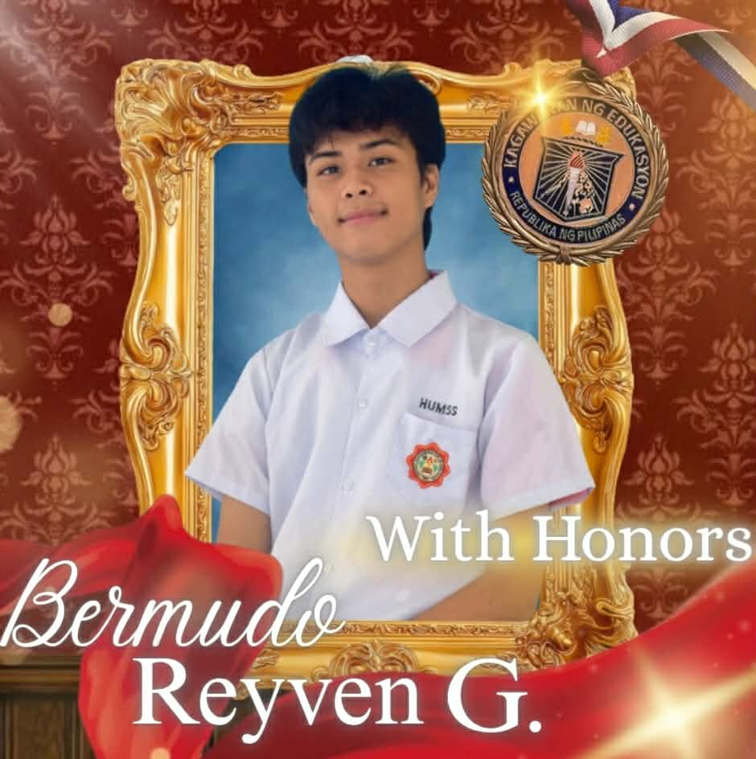
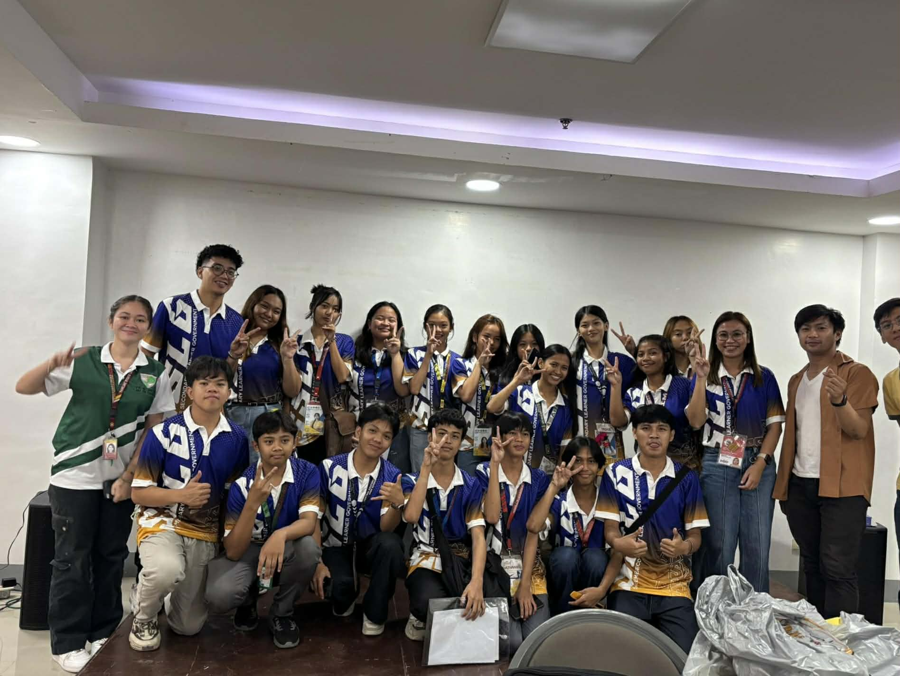
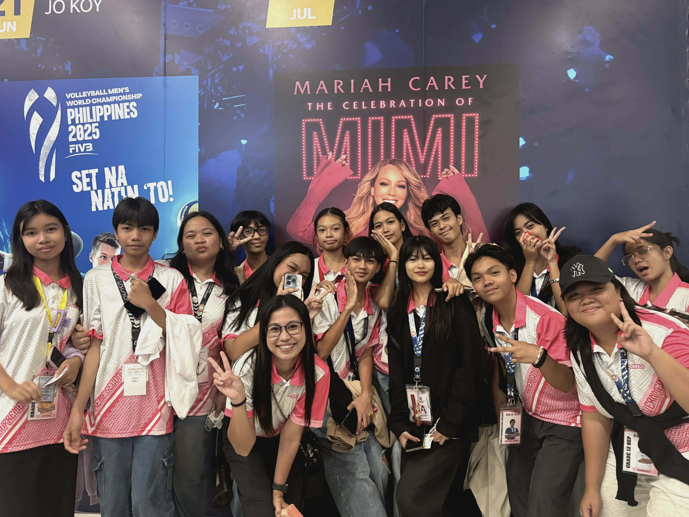
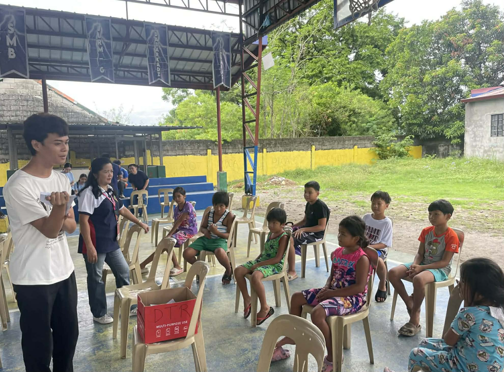
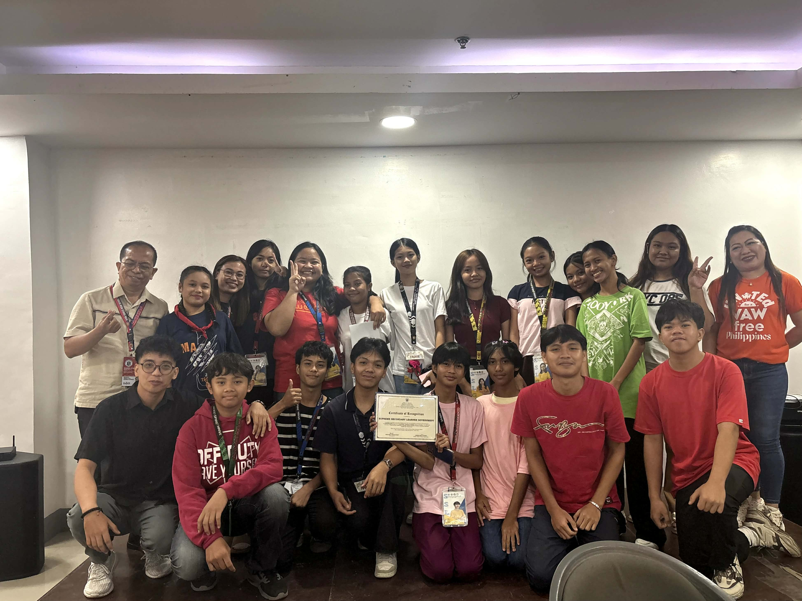

"Before leadership found me, I was simply another student trying to fit in."
My high school journey began in Grade 7. Yes, I know it was 2021—the height of the pandemic. Despite the challenges, I was fortunate enough to be among the students who were allowed to attend limited face-to-face classes. Back then, you might think I was a typical student who confidently raised my hand, spoke well in front of others, and knew how to handle problems. But the truth is, I was the exact opposite. I was afraid of speaking in public, lacked confidence, and was uncomfortable stepping outside my comfort zone. Everything started to change in Grade 8. I often saw the student leaders in our school working with confidence and determination. One person stood out to me the most—a fellow Grade 8 student named Vanessa Jotic. Seeing someone my age take on leadership roles made me realize that leadership was not only for older students. That day, she became my inspiration. From that moment on, a question kept coming to my mind: "Why not give it a try?"
"One decision changed everything—I chose to step forward despite my fears."
To make a long story short, I decided to run for a position, and fortunately, I had no opponent. I was elected and became partners in leadership with Vanessa Jotic. That marked the beginning of our leadership journey together. During my first year in the SSLG, I was still unsure of myself. I often questioned whether I was truly capable of fulfilling my responsibilities. There were moments when the work became stressful and challenging, but there were also many enjoyable experiences along the way. What made the journey easier was the people I worked with. My fellow SSLG members were friendly, supportive, and easy to bond with. As time passed, I realized that leadership was not only about responsibilities and challenges—it was also about teamwork, friendship, and growing together as a community.

"The community gave me a place where my voice mattered."
By the time I reached Grades 9 and 10, my confidence had grown significantly. I was no longer afraid to participate in class, and I actively practiced my public speaking skills whenever I had the opportunity. It felt as if my personality had completely changed. The community I became part of—the SSLG—helped me become a more confident and capable version of myself. This chapter of my life is one of the things I am most grateful for. Through SSLG, I discovered strengths that I never knew I had. However, there came a time when I began to ask myself, “What if I aimed for a higher position in SSLG?” I knew it would be difficult, but I wanted to challenge myself and find out where my true strengths lay. As I explored different responsibilities, I found myself drawn to the world of editing and encoding. I worked hard to learn these skills, spending time and effort improving little by little each day. It was not easy, but through dedication and perseverance, I eventually mastered them. More importantly, I discovered a passion that would become a major part of my leadership journey.

"Every activity became another piece of my story."
Through my journey in the SSLG, I learned so much that the lessons and experiences I gained have become a guide for me whenever I face challenges. Looking back, I once had people who inspired me to become a leader. Now, I am grateful that I have become an inspiration to others as well. There is a special feeling whenever students tell me things like, “I want to join SSLG because I see how you work together,” “Your edits and projects are amazing,” or “I want to join the Multimedia Team if you will teach me.” Hearing those words is incredibly rewarding because they remind me that the work we do as student leaders has a positive impact on others. What makes it even more meaningful is knowing that people appreciate the efforts of the SSLG organization that I am proud to be part of. Through this community, I have been given opportunities to represent our school and serve my fellow students. More than the skills I developed, SSLG taught me the value of leadership, service, and inspiring others to become the best version of themselves. I would also like to express my heartfelt gratitude to our SSLG Adviser, Ma’am Arnette Layug, for always guiding, supporting, and believing in us. Her leadership, encouragement, and dedication have helped us grow not only as student leaders but also as individuals. She has been a constant source of motivation whenever we faced challenges and has always reminded us to serve with integrity, passion, and purpose. The lessons she shared and the trust she gave us inspired us to become better versions of ourselves. As I continue my journey, I will always carry the values, experiences, and memories that SSLG has given me. From being a quiet and uncertain student to becoming a leader who serves and inspires others, my community has played a significant role in shaping my identity. This journey has taught me that true leadership is not about being recognized—it is about making a positive difference in the lives of others and encouraging them to believe in their own potential.

"Leadership is not about titles. It is about service."
One of the most meaningful lessons I learned through SSLG is that leadership is not measured by a position or a title. True leadership is shown through service and the willingness to help others. Throughout my journey, I had the opportunity to participate in various school and community activities, including outreach programs that aimed to support children and community members in need. These experiences allowed me to see the impact that even small acts of kindness and service can have on people's lives. Being involved in these activities taught me the importance of empathy, responsibility, and teamwork. I learned that a leader does not simply give instructions but leads by example. Whether it was helping organize events, supporting community projects, or working alongside fellow volunteers, every experience reminded me that leadership is about making a positive difference in the lives of others. Through service, I discovered that the greatest reward of leadership is not recognition—it is knowing that you have helped someone and contributed to your community. "Leadership is not about titles. It is about service."

"The person I am today is different from the person I was before."
As I look back on my journey, I realize how much I have grown since the shy and uncertain student I once was. The SSLG community helped me build confidence, develop my voice, and believe in my abilities. Through countless experiences, I improved my communication skills and became more comfortable speaking in front of different audiences. I learned how to express my ideas clearly, work with others effectively, and take responsibility for my actions. Along the way, I also developed discipline, time management, and perseverance—qualities that continue to guide me in both academics and leadership. The lessons I gained from SSLG did not only help me become a better leader; they also helped me become a better student. My hard work and determination eventually led me to achieve academic success, including earning recognition as a With Honors student. Today, I understand that confidence is not something a person is born with—it is something that grows through experience, challenges, and continuous learning. The journey was not always easy, but every step helped shape the person I am today. The SSLG did more than give me leadership opportunities. It gave me a community that believed in me, challenged me to grow, and helped me discover my true identity. From Silence to Significance—this is the story of how my community shaped who I am today.
I joined SSLG to serve my community, but in the process, my community helped build my identity, strengthen my confidence, and inspire me to become a better version of myself.
Submitted To
You discovered a hidden part of the story. Enter the access code.